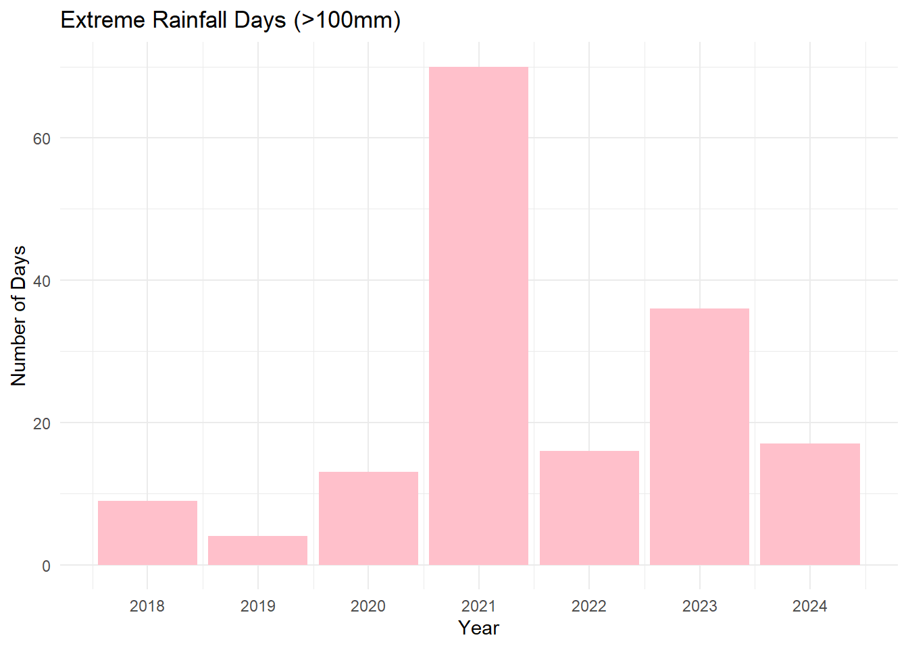
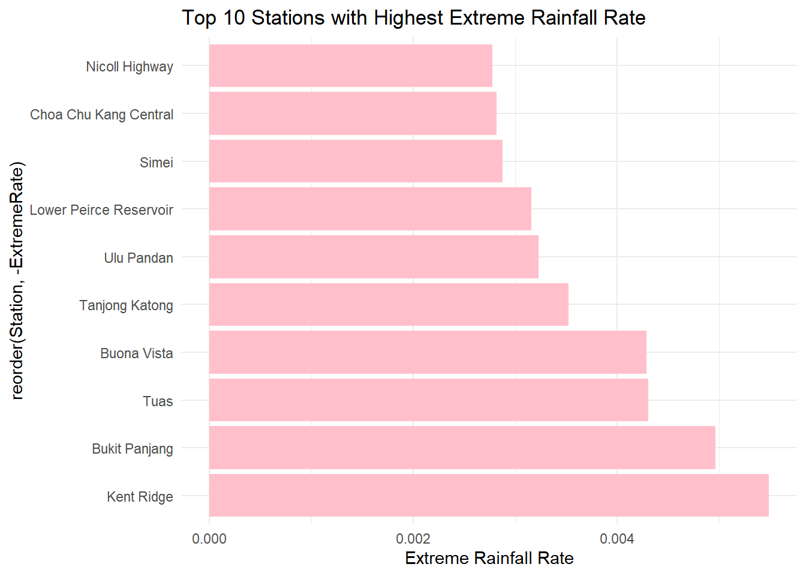

pacman::p_load(tidyverse, lubridate, SmartEDA,
ggplot2, DataExplorer, dplyr, ggmap)Take-home_Ex03
Data Preparation
This document will go through how we prepare the data that will be used for the Shiny application.
1.Setup
1.1 Loading Packages
1.2 Loading Data
We will load the provided
weather <- read.csv("data/weather_data.csv")
active_stations <- read.csv("data/active_rainfall_stations.csv")# Remove () for consistent naming
weather$Station <- gsub("[()]", "", trimws(as.character(weather$Station)))
active_stations$Station.Name <- gsub("[()]", "", trimws(as.character(active_stations$Station.Name)))
# Filter for active stations
weather_active <- weather %>%
filter(Station %in% active_stations$Station.Name)
# Select relevant columns for EDA + Temporal Rainfall Analysis
weather_active <- weather_active %>%
select(
Station, Year, Month, Day,
Daily.Rainfall.Total..mm.,
Highest.30.Min.Rainfall..mm.,
Highest.60.Min.Rainfall..mm.,
Highest.120.Min.Rainfall..mm.,
Mean.Temperature..Â.C.,
Maximum.Temperature..Â.C.,
Minimum.Temperature..Â.C.,
Mean.Wind.Speed..km.h.,
Max.Wind.Speed..km.h.,
) %>%
filter(!is.na(Daily.Rainfall.Total..mm.)) %>%
merge(active_stations, by.x = "Station", by.y = "Station.Name") %>%
select(
Station, Year, Month, Day,
Daily.Rainfall.Total..mm.,
Highest.30.Min.Rainfall..mm.,
Highest.60.Min.Rainfall..mm.,
Highest.120.Min.Rainfall..mm.,
Mean.Temperature..Â.C.,
Maximum.Temperature..Â.C.,
Minimum.Temperature..Â.C.,
Mean.Wind.Speed..km.h.,
Max.Wind.Speed..km.h.,
Latitude, Longitude
) %>%
mutate(
Date = make_date(Year, Month, Day),
Station = as.factor(Station),
# Add Monsoon Season Label
Season = case_when(
Month %in% c(12, 1, 2) | (Month == 3 & Day <= 15) ~ "Northeast Monsoon",
(Month == 3 & Day > 15) | Month %in% c(4, 5) ~ "Inter-monsoon I",
Month %in% c(6, 7, 8, 9) ~ "Southwest Monsoon",
Month %in% c(10, 11) ~ "Inter-monsoon II",
TRUE ~ "Unknown"
),
Season = factor(Season, levels = c("Northeast Monsoon", "Inter-monsoon I", "Southwest Monsoon", "Inter-monsoon II"))
) %>%
arrange(Station, Date)# 全部变量初步 EDA（描述性统计）
weather_active %>% ExpData(type = 1) Descriptions Value
1 Sample size (nrow) 64853
2 No. of variables (ncol) 17
3 No. of numeric/interger variables 14
4 No. of factor variables 2
5 No. of text variables 0
6 No. of logical variables 0
7 No. of identifier variables 0
8 No. of date variables 1
9 No. of zero variance variables (uniform) 0
10 %. of variables having complete cases 52.94% (9)
11 %. of variables having >0% and <50% missing cases 17.65% (3)
12 %. of variables having >=50% and <90% missing cases 0% (0)
13 %. of variables having >=90% missing cases 29.41% (5)weather_active %>% ExpData(type = 2) Index Variable_Name Variable_Type Sample_n Missing_Count
1 1 Station factor 64853 0
2 2 Year numeric 64853 0
3 3 Month numeric 64853 0
4 4 Day numeric 64853 0
5 5 Daily.Rainfall.Total..mm. numeric 64853 0
6 6 Highest.30.Min.Rainfall..mm. numeric 64506 347
7 7 Highest.60.Min.Rainfall..mm. numeric 64485 368
8 8 Highest.120.Min.Rainfall..mm. numeric 64485 368
9 9 Mean.Temperature..Â.C. numeric 0 64853
10 10 Maximum.Temperature..Â.C. numeric 0 64853
11 11 Minimum.Temperature..Â.C. numeric 0 64853
12 12 Mean.Wind.Speed..km.h. numeric 0 64853
13 13 Max.Wind.Speed..km.h. numeric 0 64853
14 14 Latitude numeric 64853 0
15 15 Longitude numeric 64853 0
16 16 Date Date 64853 0
17 17 Season factor 64853 0
Per_of_Missing No_of_distinct_values
1 0.000 27
2 0.000 7
3 0.000 12
4 0.000 31
5 0.000 679
6 0.005 346
7 0.006 450
8 0.006 542
9 1.000 0
10 1.000 0
11 1.000 0
12 1.000 0
13 1.000 0
14 0.000 27
15 0.000 27
16 0.000 2557
17 0.000 4We filtered historical weather data from active MSS rainfall stations and retained relevant columns for temporal rainfall analysis, including daily and extreme rainfall, temperature, and wind speed. We added a ‘Date’ column and labeled each record with a monsoon season based on the calendar month. Missing values in ‘Daily Rainfall’ were removed for analysis consistency.
1.
# Monthly trends
weather_active %>%
group_by(Year, Month) %>%
summarise(AvgRain = mean(Daily.Rainfall.Total..mm., na.rm = TRUE)) %>%
ggplot(aes(x = Month, y = AvgRain, group = Year, color = as.factor(Year))) +
geom_line() + geom_point() +
labs(title = "Monthly Average Rainfall", y = "Avg Rainfall (mm)", color = "Year") +
theme_minimal()`summarise()` has grouped output by 'Year'. You can override using the
`.groups` argument.
1.Comparison of Rainfall in Various Monsoon Seasons
# 各个季风季节的降雨比较
library(ggplot2)
ggplot(weather_active, aes(x = Season, y = Daily.Rainfall.Total..mm.)) +
geom_boxplot(fill = "skyblue") +
theme_minimal() +
labs(title = "Daily Rainfall across Monsoon Seasons", y = "Daily Rainfall (mm)")
- Seasonal distribution - average monthly rainfall
Check which months have the highest rainfall throughout the year and whether it is consistent with the monsoon cycle
weather_active %>%
group_by(Month) %>%
summarise(Avg_Rain = mean(Daily.Rainfall.Total..mm.)) %>%
ggplot(aes(x = Month, y = Avg_Rain)) +
geom_col(fill = "steelblue") +
labs(title = "Average Daily Rainfall by Month", x = "Month", y = "Avg Daily Rainfall (mm)") +
theme_minimal()- Annual trend - total annual rainfall
weather_active %>%
group_by(Year) %>%
summarise(Total_Rainfall = sum(Daily.Rainfall.Total..mm.)) %>%
ggplot(aes(x = Year, y = Total_Rainfall)) +
geom_line(group = 1, color = "lightblue", size = 1.2) +
geom_point(color = "lightgreen") +
labs(title = "Total Rainfall by Year", y = "Total Rainfall (mm)") +
theme_minimal()Warning: Using `size` aesthetic for lines was deprecated in ggplot2 3.4.0.
ℹ Please use `linewidth` instead.
4.Rainfall differences at different sites
Check which region has the most rainfall and whether there is any geographical deviation.
weather_active %>%
group_by(Station) %>%
summarise(Avg_Rain = mean(Daily.Rainfall.Total..mm.)) %>%
arrange(desc(Avg_Rain)) %>%
ggplot(aes(x = reorder(Station, -Avg_Rain), y = Avg_Rain)) +
geom_col(fill = "lightblue") +
labs(title = "Rainfall differences at different sites", x = "Station", y = "Avg Daily Rainfall (mm)") +
theme_minimal() +
theme(axis.text.x = element_text(angle = 45, hjust = 1))
- Daily Rainfall Time Chart (Overall Trend)
This can help us see if there is a clear trend or extreme value
weather_active %>%
group_by(Date) %>%
summarise(Daily_Rainfall_Sum = sum(Daily.Rainfall.Total..mm.)) %>%
ggplot(aes(x = Date, y = Daily_Rainfall_Sum)) +
geom_line(color = "blue") +
labs(title = "Daily Rainfall over Time", y = "Total Daily Rainfall (mm)") +
theme_minimal()- Explore extreme rainfall events
We can check the distribution of days with rainfall greater than 100mm.
weather_active %>%
filter(Daily.Rainfall.Total..mm. > 100) %>%
count(Year) %>%
ggplot(aes(x = Year, y = n)) +
geom_col(fill = "pink") +
labs(title = "Extreme Rainfall Days (>100mm)", y = "Number of Days") +
theme_minimal()
- extreme
# Proportion of Extreme Rain Days
weather_active %>%
mutate(ExtremeRain = Daily.Rainfall.Total..mm. > 100) %>%
group_by(Station) %>%
summarise(ExtremeRate = mean(ExtremeRain)) %>%
arrange(desc(ExtremeRate)) %>%
head(10) %>%
ggplot(aes(x = reorder(Station, -ExtremeRate), y = ExtremeRate)) +
geom_col(fill = "coral") +
labs(title = "Top 10 Stations with Highest Extreme Rainfall Rate", y = "Extreme Rainfall Rate") +
theme_minimal() +
coord_flip()
We conducted EDA to uncover key temporal and spatial rainfall trends in Singapore. Monthly and yearly rainfall summaries were visualized to observe seasonality and long-term changes. Station-wise comparisons revealed spatial heterogeneity, while time series plots allowed us to identify potential anomalies and extreme rainfall patterns.
- Spatial Rainfall EDA
library(ggplot2)
library(ggmap)
library(ggrepel)
weather_active %>%
group_by(Station, Latitude, Longitude) %>%
summarise(Avg_Rain = mean(Daily.Rainfall.Total..mm.)) %>%
ggplot(aes(x = Longitude, y = Latitude, color = Avg_Rain)) +
geom_point(size = 3) +
scale_color_viridis_c() +
labs(title = "Average Daily Rainfall by Station Location", color = "Avg Rainfall (mm)") +
theme_minimal()`summarise()` has grouped output by 'Station', 'Latitude'. You can override
using the `.groups` argument.
Time series Plot
# Time Series Plot
library(forecast)Warning: package 'forecast' was built under R version 4.4.3Registered S3 method overwritten by 'quantmod':
method from
as.zoo.data.frame zoo library(tsibble)Registered S3 method overwritten by 'tsibble':
method from
as_tibble.grouped_df dplyr
Attaching package: 'tsibble'The following object is masked from 'package:lubridate':
intervalThe following objects are masked from 'package:base':
intersect, setdiff, unionlibrary(lubridate)
rain_ts <- weather_active %>%
group_by(Date) %>%
summarise(Total_Rain = sum(Daily.Rainfall.Total..mm., na.rm = TRUE)) %>%
ts(start = c(2018, 1), frequency = 365)
autoplot(rain_ts) +
labs(title = "Total Daily Rainfall Over Time", y = "Rainfall (mm)")